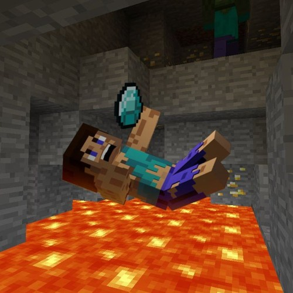

Op de video is te zien hoe een bepaald individu een historisch moment
neerzette , hij gooide zijn emmer met water alvorens hij zelf van het
platform afsprong. Hij ving deze vervolgens tijdens zijn val terug op
en net voor hij aan een fatale sneleid de grond ging geraken leegde
hij de water onder zijn voeten zodoende dat zijn heroische daad ervoor
zorgde dat hij geen valschade opliep en hij rustig verder kon gaan met
zijn dag. Wetende dat dit mogelijk was, velen hebben het geprobeerd en
velen hebben gefaald.
